Soy Profesora-Investigadora del Instituto Tecnológico de Veracruz y desarrollo investigación en el área de la biotecnología microbiana, con especial interés en el estudio y aplicación de enzimas de origen microbiano. Mi trabajo integra la biocatálisis, la ingeniería de enzimas y el descubrimiento de nuevos biocatalizadores con el desarrollo de procesos para la valorización de residuos agroindustriales.
A lo largo de mi trayectoria he trabajado en la búsqueda, producción, caracterización y aplicación de carbohidrasas, así como en el estudio de comunidades microbianas mediante herramientas metagenómicas y bioinformáticas. Actualmente, una parte importante de mi investigación se orienta al aprovechamiento de biomasa agroindustrial para la obtención de oligosacáridos, azúcares fermentables y otros productos de valor agregado.
Mi actividad científica se complementa con la formación de estudiantes de licenciatura y posgrado, la colaboración con grupos de investigación nacionales y el desarrollo de proyectos orientados a generar soluciones biotecnológicas sostenibles.
- Estancia posdoctoral (2016–2017): UNIDA - Instituto Tecnológico de Veracruz, Laboratorio de Bioingeniería. Proyecto: Generación de cepas amilolíticas y fermentativas para la producción de etanol de primera generación. Investigador anfitrión: Dra. Guadalupe Aguilar Uscanga.
- Estancia Sabática (2015–2016): UNIDA - Instituto Tecnológico de Veracruz, Laboratorio de Bioingeniería. Proyecto: Caracterización de enzimas productoras de azúcares simples para la producción de etanol. Investigador anfitrión: Dra. Guadalupe Aguilar Uscanga.
- Doctorado en Ciencias Bioquímicas (2004–2008): Instituto de Biotecnología, UNAM. Departamento de Biocatálisis y Biología Molecular. Tesis: Función de las regiones adicionales de la inulosacarasa de Leuconostoc citreum CW28.
- Maestría en Ciencias Bioquímicas (2002–2004): Instituto de Biotecnología, UNAM. Departamento de Biocatálisis y Biología Molecular. Tesis: Degradación proteolítica de la dextransacarasa de Leuconostoc mesenteroides NRRL B52.
- Licenciatura en Ingeniería Bioquímica (1996–2001): Instituto Tecnológico de Veracruz. Titulación por promedio. Residencias profesionales en el Laboratorio de Genética (UNIDA).
- Tecnológico Nacional de México / Instituto Tecnológico de Veracruz (2024 – Fecha Actual): Profesor Investigador TC Titular C. Departamento de Ingeniería Química y Bioquímica-UNIDA. Docencia e investigación- Laboratorio de Bromatología.
- Tecnológico Nacional de México / Instituto Tecnológico de Veracruz (2018 – 2024): Investigador por México - Cátedra CONAHCyT. Actividades de docencia e investigación en el Laboratorio de Bioingeniería.
- Universidad del Papaloapan, SUNEO, Tuxtepec, Oax. (2008 – 2018): Profesor Investigador Titular B. Jefa de la División de Estudios de Posgrado. Responsable del Laboratorio de Biología Molecular. Fundadora de los Posgrados de Biotecnología. Profesora a nivel licenciatura y posgrado, tutora y directora de tesis.
- Posgrado (MCIBQ / UNIDA): Enzimología, Microbiología.
- Licenciatura: Biocatálisis, Biocatálisis en la Industria Farmacéutica, Balance de Materia y Energía, Química General, Desarrollo de herramientas biotecnológicas para la generación de biocombustibles.
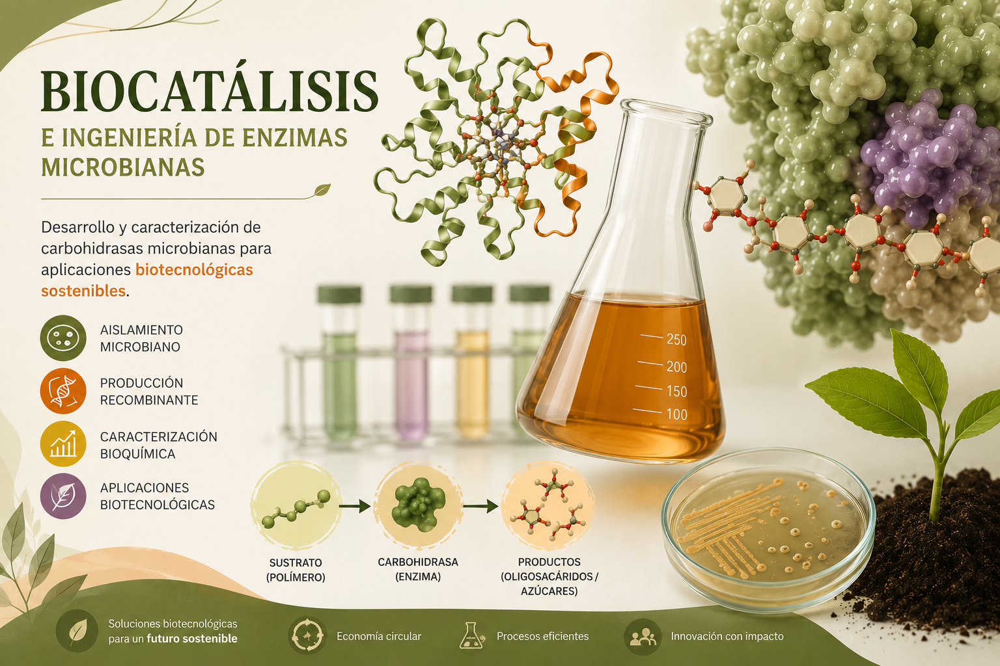
Nuestro grupo desarrolla y estudia carbohidrasas de origen microbiano con aplicaciones en la transformación sostenible de biomasa. Empleamos herramientas de microbiología, biología molecular, ingeniería genética y bioquímica para el aislamiento, producción recombinante, optimización y caracterización de enzimas como amilasas, celulasas, xilanasas y β-glucosidasas. Asimismo, integramos análisis estructurales y bioinformáticos para comprender sus mecanismos catalíticos y ampliar su potencial de aplicación en procesos biotecnológicos.
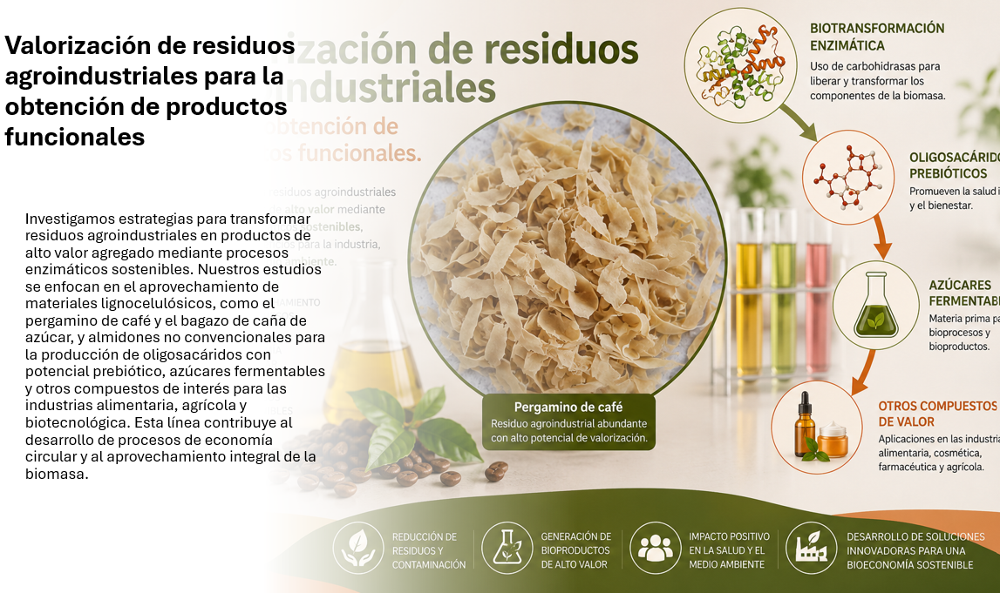
Investigamos estrategias para transformar residuos agroindustriales en productos de alto valor agregado mediante procesos enzimáticos sostenibles. Nuestros estudios se enfocan en el aprovechamiento de materiales lignocelulósicos, como el pergamino de café y el bagazo de caña de azúcar, para la producción de oligosacáridos con potencial prebiótico, azúcares fermentables y otros compuestos de interés para las industrias alimentaria y biotecnológica. Esta línea contribuye al desarrollo de procesos de economía circular y al aprovechamiento integral de la biomasa.
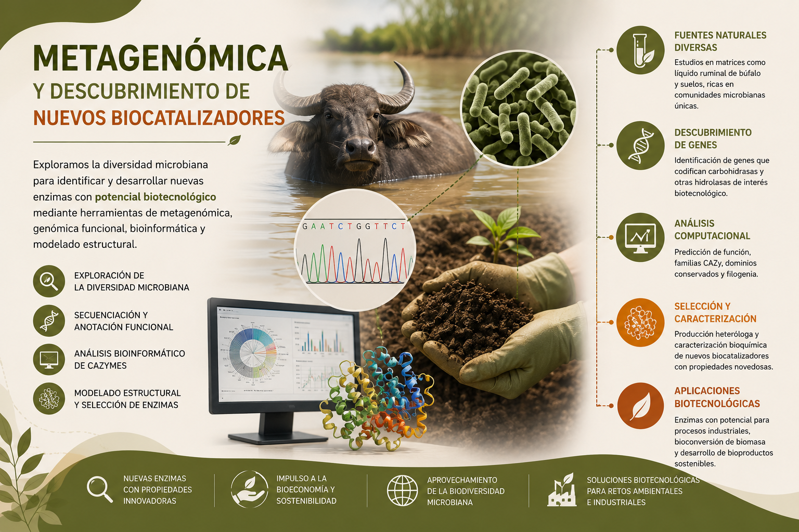
Exploramos la diversidad genética de comunidades microbianas mediante herramientas de metagenómica, genómica funcional y bioinformática para identificar nuevas enzimas con potencial biotecnológico. El análisis de familias CAZyme, la anotación funcional y el modelado estructural permiten descubrir biocatalizadores con propiedades de interés y evaluar su aplicación en la conversión de biomasa y el desarrollo de bioprocesos.
- 2025: Hernández-Heredia, S., Aguilar-Uscanga, M.G., Nolasco-Hipólito, C., del Moral S. Production and application of α-amylase, native AmyJ33-ABC, from Bacillus siamensis JJC33M in gelatinized potato starch and its industrial potential. Biotechnol Lett 47, 123.
DOI: 10.1007/s10529-025-03659-4 Ver Autor
- 2024: Miranda-Sosa A, del Moral S, Infanzón-Rodriguez MI, Aguilar-Uscanga MI. Reappraisal of different agro-industrial waste for the optimization of cellulase production from Aspergillus niger ITV02 in a liquid medium using a Box–Benkhen design. 3 Biotech 14, 278.
DOI: 10.1007/s13205-024-04120-5 Ver Autor
- 2024: García-Paz FM, del Moral S, Morales-Arrieta S, Ayala M, Treviño-Quintanilla LG, Olvera-Carranza C. Multidomain chimeric enzymes as a promising alternative for biocatalysts improvement: a minireview. Molecular Biology Reports, 51, 410.
- 2022: Hernandez-Heredia SC, Peña-Castro J, Aguilar-Uscanga MA, Olvera C, Nolasco-Hipolito C, del Moral S. AmyJ33, a truncated amylase with improved catalytic properties. Biotechnology Letters 44(12), 1447-1463.
DOI: 10.1007/s10529-022-03311-5 Ver Autor
- 2017: Montor-Antonio JJ, Hernandez-Heredia S, Avila-Fernandez A, Olvera C, Sachman-Ruíz B, del Moral S. Effect of differential processing of the native and recombinant a-amylase from Bacillus amyloliquefaciens JJC33M on specificity and enzyme properties. 3 Biotech 7, 336.
DOI: 10.1007/s13205-017-0954-8 Ver Autor
- 2015: Montor-Antonio JJ, Sachman-Ruiz B, Lozano L, del Moral S. Draft genome sequence of Bacillus amyloliquefaciens JJC33M, isolated from sugarcane soils in the Papaloapan region, Mexico. Genome Announc 3(1), e01519-14.
DOI: 10.1128/genomeA.01519-14 Ver Autor
- 2008: del Moral S, Olvera C, Rodriguez ME, Lopez-Munguia A. Functional role of the additional domains in inulosucrase (IslA) from Leuconostoc citreum CW28. BMC Biochemistry 9(1), 6.
DOI: 10.1186/1471-2091-9-6 Ver Autor
- 2025: Hernández-Heredia, S., Aguilar-Uscanga, M.G., Nolasco-Hipólito, C., del Moral S. Production and application of α-amylase, native AmyJ33-ABC, from Bacillus siamensis JJC33M in gelatinized potato starch and its industrial potential. Biotechnol Lett 47, 123.
DOI: 10.1007/s10529-025-03659-4 Ver Autor
- 2025: Guevara-Sánchez JG, Aguilar-Uscanga MG, Ledesma-Escobar CA, Castro-Martínez C, Condé R, Sachman-Ruíz B, del Moral S. Taxane Producing Fungi Isolated from Taxus globosa Tree Bark. Microorganisms, 13(2), 300.
DOI: 10.3390/microorganisms13020300 Ver Autor
- 2024: Miranda-Sosa A, del Moral S, Infanzón-Rodriguez MI, Aguilar-Uscanga MI. Reappraisal of different agro-industrial waste for the optimization of cellulase production from Aspergillus niger ITV02 in a liquid medium using a Box–Benkhen design. 3 Biotech 14, 278.
DOI: 10.1007/s13205-024-04120-5 Ver Autor
- 2024: García-Paz FM, del Moral S, Morales-Arrieta S, Ayala M, Treviño-Quintanilla LG, Olvera-Carranza C. Multidomain chimeric enzymes as a promising alternative for biocatalysts improvement: a minireview. Molecular Biology Reports, Vol 51, 410.
- 2024: Infanzon-Rodriguez MI, del Moral S, Gomez-Rodriguez J, Faife-Perez E, Aguilar-Uscanga MG. Second-generation Bioethanol Production and Cellulases of Aspergillus niger ITV02 Using Sugarcane Bagasse as Substrate. Bioenerg. Res. 17, 160–172.
DOI: 10.1007/s12155-023-10640-4 Ver Autor
- 2023: Infanzon-Rodriguez MI, del Moral S, Castro-Martinez C, Cano-Sarmiento C, Gomez-Rodriguez J, Aguilar-Uscanga MG. Multi-response optimization using the desirability function of exoglucanases, endoglucanases and β-glucosidases production by Aspergillus niger ITV-02 from delignified sugarcane bagasse. Sugar Tech, Vol 25, 86-98.
DOI: 10.1007/s12355-022-01191-7 Ver Autor
- 2022: Hernandez-Heredia SC, Peña-Castro J, Aguilar-Uscanga MA, Olvera C, Nolasco-Hipolito C, del Moral S. AmyJ33, a truncated amylase with improved catalytic properties. Biotechnology Letters 44(12), 1447-1463.
DOI: 10.1007/s10529-022-03311-5 Ver Autor
- 2022: Perez-Salazar Y, Peña-Montes C, del Moral S, Aguilar-Uscanga MG. Cellulases production from Aspergillus niger-ITV-02 using corn lignocellulosic residues. Revista Mexicana de Ingeniería Química, 1-14.
DOI: 10.24275/rmiq/Alim2772 Ver Autor
- 2022: Varilla-Mazaba A, Raggazo-Sánchez JA, Calderón-Santoyo M, del Moral S, Gómez-Rodríguez J, Aguilar-Uscanga MG. Multi-response optimization of acid hydrolysis in sugarcane bagasse to obtain high xylose concentration. Biomass Conversion and Biorefinery.
- 2022: Infanzon-Rodriguez MI, Ragazzo-Sanchez JA, del Moral S, Calderon-Santoyo M, Aguilar-Uscanga MG. Enzymatic hydrolysis of lignocellulosic biomass using native cellulase produced by Aspergillus niger ITV02 under liquid state fermentation. Biotechnology and Applied Biochemistry 69(1), 198-208.
DOI: 10.1002/bab.2097 Ver Autor
- 2021: Ramírez-Lagunes H, Aguilar-Uscanga MG, Infanzón-Rodríguez MI, Sachman-Ruiz B, Gómez-Rodríguez J, Nolasco-Hipólito C, del Moral S. Optimization of xylanase production from Aspergillus tamarii SCBH2 using response surface methodology. Biomass Conversion and Biorefinery.
DOI: 10.1007/s13399-021-02046-z Ver Autor
- 2020: Infanzon-Rodriguez MI, Ragazzo-Sanchez JA, del Moral S, Calderon-Santoyo M, Aguilar-Uscanga MG. Production and characterization of an enzyme extract with cellulase activity produced by an indigenous strain of Fusarium verticillioides ITV03 using sweet sorghum bagasse. Biotechnology Letters 42(11), 2271-2283.
DOI: 10.1007/s10529-020-02940 Ver Autor
- 2020: Infanzon-Rodriguez MI, Ragazzo-Sanchez JA, del Moral S, Calderon-Santoyo M, Gutierrez-Rivera B, Aguilar-Uscanga MG. Optimization of cellulase production by Aspergillus niger ITV 02 from sweet sorghum bagasse in submerged culture using a Box Behnken design. Sugar Tech 22, 266-273.
DOI: 10.1007/s12355-019-00765-2 Ver Autor
- 2019: Ojeda-Hernandez F, del Moral-Ventura S, Capataz-Tafur J, Peña-Castro J, Abad-Zavaleta J, Chay-Canul A, Ramon-Ugalde J, Ungerfeld R, Meza-Villalvazo V. Vaginal microbiota in Pelibuey sheep treated with antimicrobials at the removal of intravaginal sponges impregnated with flurogestone acetate. Small Ruminant Research 170, 116-119.
- 2018: Cortés-López NG, Sachman-Ruiz B, Montor-Antonio JJ, Miranda-Sánchez F, Alcántara-Hernández RJ, del Moral S. Starch- and cellulose-related microbial diversity of soil sown with sugarcane crops in the Papaloapan Basin, a megadiverse region of Mexico. Nova Scientia 10(20), 222-243.
- 2018: Del Moral S, Barradas-Dermitz DM, Aguilar-Uscanga MG. Production and biochemical characterization of α-glucosidase from Aspergillus niger ITV-01 isolated from sugar cane bagasse. 3 Biotech 8, 7.
DOI: 10.1007/s10529-017-1029-6 Ver Autor
- 2017: García-Gómez MJ, Del Moral Ventura ST, Nuñez-Gaona O, Ramírez-Coutiño LP, Sachman-Ruiz B. Identificación de bacterias ácido lácticas aisladas de suero fermentado de queso con potencial antimicrobiano. Journal CIM 5(2), 1183-1190.
ISSN: 2007-8102
- 2017: Desgarennes-Alcalá CM, del Moral S, Meza-Villalvazo VM, Peña-Castro JM, Zarate-Martínez JP, Abad-Zavaleta J. Allelic and genotypic frequencies of CAPN1 and CAST, two genes associated to meat quality, in cattle from the Papaloapan Basin. Nova Scientia 19, 211-228.
ISSN: 2007-0705
- 2017: Peña-Castro JM, del Moral S, Núñez-López L, Barrera-Figueroa BE, Amaya-Delgado L. Biotechnological strategies to improve plant biomass quality for bioethanol production. BioMed Research International 2017, 7824076.
- 2017: Montor-Antonio JJ, Hernandez-Heredia S, Avila-Fernandez A, Olvera C, Sachman-Ruíz B, del Moral S. Effect of differential processing of the native and recombinant a-amylase from Bacillus amyloliquefaciens JJC33M on specificity and enzyme properties. 3 Biotech (Aceptado).
ISSN: 2190-5738 Ver Autor
- 2016: Martínez-Lopez V, del Moral S, Sachman-Ruiz B, Ramírez-Coutiño LP, Garcia-Gomez MJ. Dynamic population and lactic acid bacteria isolation from fermented whey. Nova Scientia 17, 326-339.
ISSN: 2007-0705
- 2016: Hernández-Heredia S, Carrera-Lechuga J, Montor-Antonio JJ, Ramírez–Torres A, Delfín-García CO, Meza-Villalvazo V, García-Arellano C, del Moral S. Identification of bacterial contamination in fuel ethanol fermentation in southeastern Mexico. Austin Biochemistry 1(1), 1002.
Ver en Portal Editorial Ver Autor
- 2016: Hernandez-Heredia S, del Moral S. JSM Biotechnology and Biomedical Engineering 3(5), 1067.
ISSN: 2333-7117 Ver Autor
- 2015: Del Moral S, Ramírez-Coutiño LP, García-Gómez MJ. Aspectos relevantes del uso de enzimas en la industria de los alimentos. Revista Iberoamericana de Ciencias 2(3), 87-102.
Ver en Portal Editorial Ver Autor
- 2015: Montor-Antonio JJ, Sachman-Ruiz B, Lozano L, del Moral S. Draft genome sequence of Bacillus amyloliquefaciens JJC33M, isolated from sugarcane soils in the Papaloapan region, Mexico. Genome Announc 3(1), e01519-14.
DOI: 10.1128/genomeA.01519-14 Ver Autor
- 2014: Montor-Antonio JJ, del Moral S. Cloning of the α-amylase from Bacillus amyloliquefaciens JJC33M (amyJ33), isolated of sugarcane soil. Journal of Chemical, Biological and Physical Sciences 4, 111.
E-ISSN: 2249-1929 Ver Autor
- 2014: Cortés-López NG, Montor-Antonio JJ, Olvera-Carranza C, Pena-Castro JM, del Moral S. Metagenómica: una ventana de oportunidad a nuevos genes y genomas microbianos. Revista Iberoamericana de Ciencias 1, 45-58.
- 2014: Gutiérrez-Lucas LR, Montor-Antonio JJ, Cortés-López NG, del Moral S. Strategies for the extraction, purification and amplification of metagenomic DNA from soil growing sugarcane. Advances in Biological Chemistry 4, 281-289.
- 2014: Montor-Antonio JJ, Olvera C, Reyes-Duarte D, Sachman-Ruiz B, Ramirez-Coutiño LP, del Moral S. Biochemical characterization of the amylase from Bacillus amyloliquefaciens isolated of cane sugar soils at the Papaloapan region. Nova Scientia 6(12), 39-59.
DOI: 10.21640/ns.v6i12.23 Ver Autor
- 2013: Cortés-López NG, Abad-Zavaleta J, Bravo-Delgado HR, Meza-Villalvazo VM, Sachman-Ruiz B, García-Arellano C, del Moral S. Effect of fluorogestone acetate on the vaginal microbiota from ewes pelibuey in the Papaloapan region. Tropical and Subtropical Agroecosystems 16, 309-314.
ISSN: 1870-0462
- 2012: Cortés-López NG, del Moral S, Rueda JA, Luna-Palomera C, Meza-Herrera CA, Abad-Zavaleta. Allelic and genotypic frequency of kappa casein gene in double purpose cattle. Tropical and Subtropical Agroecosystems 15(1), 47-55.
- 2011: Abad-Zavaleta J, Sifuentes-Rincón AM, Lafón-Terrazas A, Gutiérrez-Alderete J, González Rodríguez E, Ortega Gutiérrez JA, del Moral S, Meza Herrera CA. Genetic diversity analysis of two desert bighorn sheep (ovis canadensis mexicana) population in Mexico. Tropical and Subtropical Agroecosystems 14, 171–178.
ISSN: 1870-0462
- 2008: del Moral S, Olvera C, Rodriguez ME, Lopez-Munguia A. Functional role of the additional domains in inulosucrase (IslA) from Leuconostoc citreum CW28. BMC Biochemistry 9(1), 6.
DOI: 10.1186/1471-2091-9-6 Ver Autor
Publicaciones destacadas
Listado completo de publicaciones científicas
Publicaciones destacadas
Artículos de divulgación
- 2026: Figueroa-Hernandez CY, Delfin-Ruiz ME, del Moral Ventura ST. "¡Mesero! Un menú de prebióticos para mis bacterias". Revista de divulgación Ingenius. Universidad Cristóbal Colón. Vol 1, número 4, pg. 40-46. [Ver enlace]
- 2023: Hernández Heredia SC, del Moral Ventura ST. "Producción de enzimas recombinantes, un vistazo a lo increíble". Revista de divulgación Ingenius. Universidad Cristóbal Colón. Vol 1, número 2, pg, 22-25. [Ver enlace]
- 2023: del Moral-Ventura ST, Carvajal-Zarrabal O, Navarro-Moreno LG, Carrillo-Ahumada J, Aguilar-Uscanga MG, Nolasco-Hipolito C. "Desarrollo de tecnología para producir bioetanol lignocelulósico en México, retos y oportunidades". Revista Internacional de Investigación e Innovación Tecnológica. Año 11, no. 62. ISSN: 2007-9753 Latindex Folio: 23614. [Ver enlace]
- 2021: Ávila Fernández Ángela, del Moral Sandra y Ortiz-Soto Maria Elena. "¿Héroes o villanos? Los azúcares en la salud y la enfermedad". Revista Digital Universitaria (RDU), 22(2). ISSN: 1607-6079. [Ver DOI]
Capítulos de libro
- Capítulo de Libro (2023): "Enzimas recombinantes para la producción de bioetanol". En: Latinoamérica ante el desafío de las energías renovables. Ave Editorial, pp. 106-125. ISBN 978-607-8153-79-4
Formación de recursos humanos
Doctorado · Maestría · Licenciatura · Residencias profesionales
- 27 de junio de 2022: RadioSEV. "El cafecito con… Dra. Sandra T. del Moral Ventura". 107.7 FM (8:00 - 9:00 am).
- 15 de julio de 2022: RadioSEV. "Cuéntame tu historia… Dra. Sandra T. del Moral Ventura". 107.7 FM. Ver enlace.
- 07 de junio de 2022: Reportaje de Tachiwín: Pláticas ConCiencia a través del Consejo Veracruzano de Investigación y Desarrollo Tecnológico. Ver enlace.
- 04 de abril de 2019: Reportaje de TV Azteca Veracruz. Ver enlace.
- 21 de enero de 2015: del Moral S. "Del Ibt-UNAM al Papaloapan Oaxaqueño: una experiencia reveladora". La Unión de Morelos. Ver enlace.
- 11 de agosto de 2011: del Moral S. "Viaje al fondo del suelo: un mundo por descubrir". El Imparcial de Oaxaca.
Desarrollo y validación in vitro de postbióticos enriquecidos con ácidos grasos de cadena media mediante nanoemulsiones con potencial actividad antineuroinflamatoria.
Desarrollo de biocatalizadores innovadores para la producción sostenible de prebióticos emergentes con impacto en la salud.
Escalamiento de la producción de AmyJ33-ABC recombinante.
Estudio dinámico de la producción de AmyJ33-ABC recombinante.
Revalorización de los desechos de la producción de bioetanol 2G para la generación de biofertilizantes y enzimas.
Producción de paclitaxel a partir de celulas de Taxus globosa y hongos endofíticos.
Desarrollo de herramientas biotecnológicas para la producción de bioetanol de 1G y 2G a partir de desechos agroindustriales a nivel planta piloto.
Metagenoma de suelos de la Cuenca del Papaloapan con potencial aplicación industrial.
Metagenómica funcional a partir de microorganismos de suelos la Cuenca del Papaloapan con potencial aplicación industrial.
XXVII Festival de las Aves y los Humedales
Participamos en actividades de divulgación y acercamiento de la ciencia a la sociedad, como el XXVII Festival de las Aves y los Humedales, realizado en La Mancha, Actopan, Veracruz. A través de actividades lúdicas y demostrativas, acercamos conceptos científicos a visitantes de diferentes edades, promoviendo el interés por la ciencia, la biodiversidad y el cuidado del ambiente.

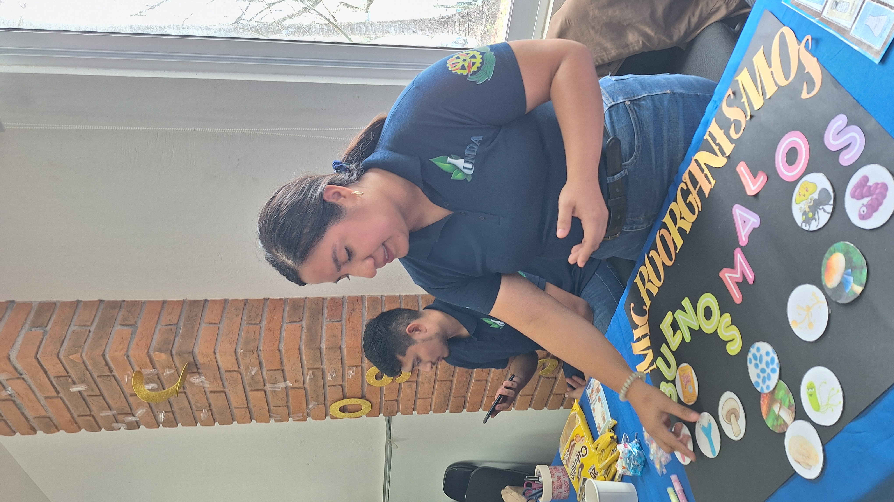
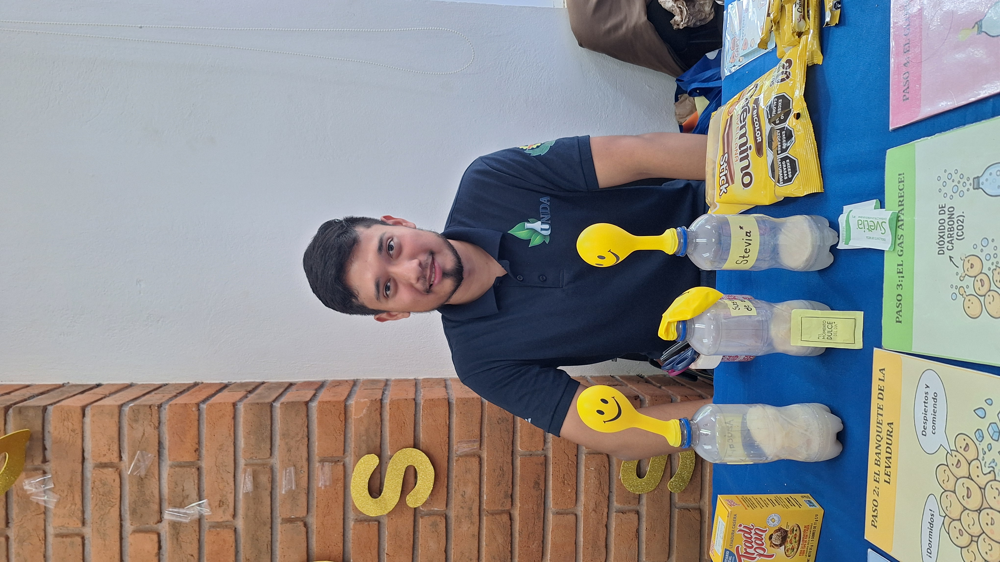
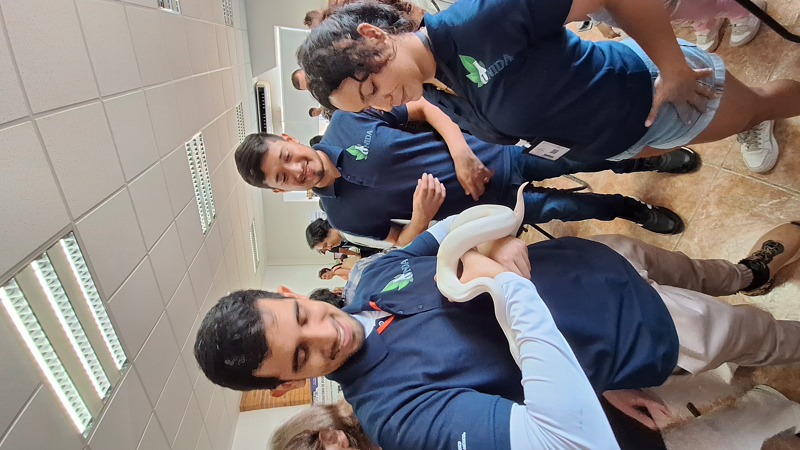
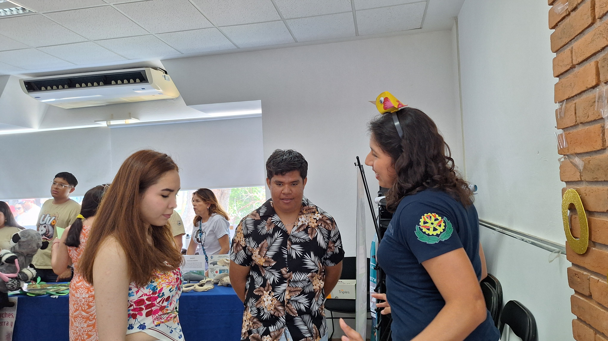
ExpoPosgrados ITVER
Organizamos y participamos en la Expo de Posgrados de la Unidad de Investigación y Desarrollo en Alimentos (UNIDA), que se realiza anualmente durante el semestre enero-junio. Es un espacio abierto a toda la comunidad, en el que damos a conocer nuestros programas de posgrado, líneas de investigación y proyectos mediante juegos, actividades lúdicas y demostraciones científicas, promoviendo el acercamiento a la ciencia y la interacción directa con estudiantes e investigadores.
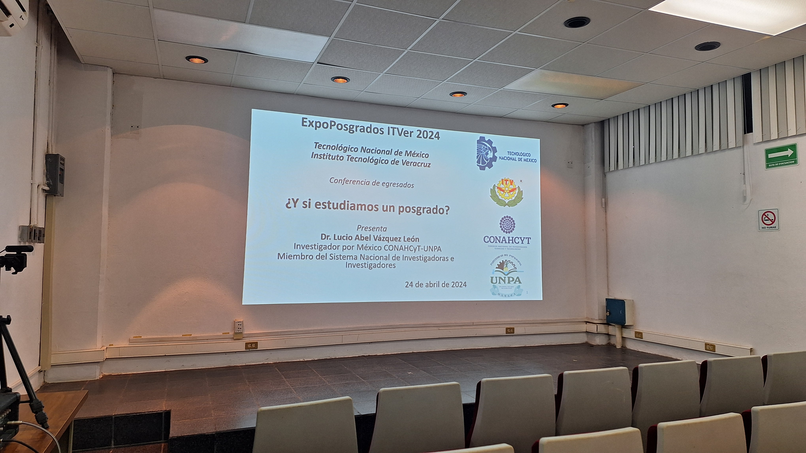
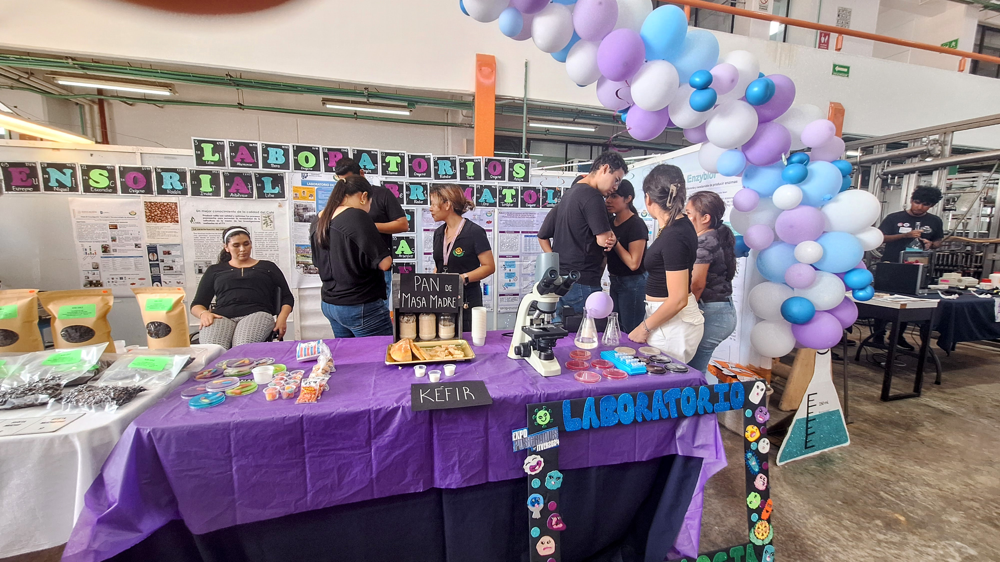
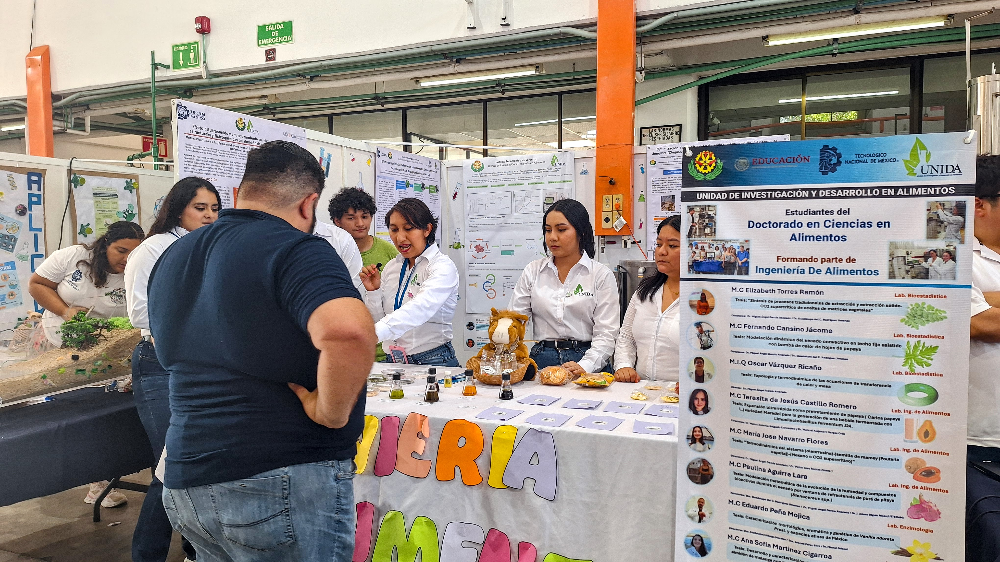
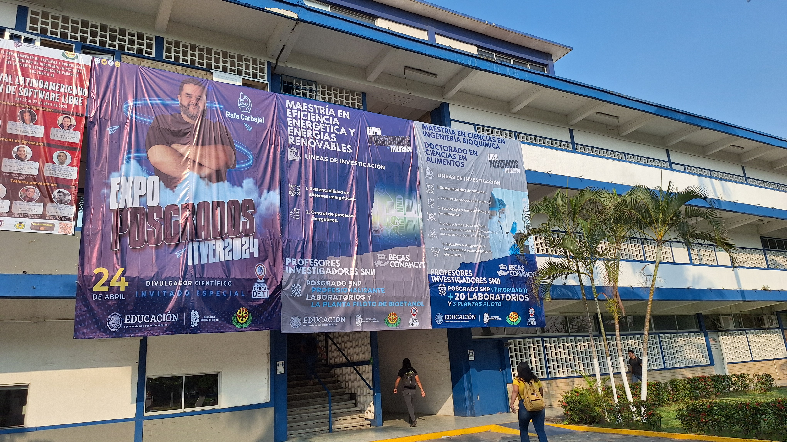
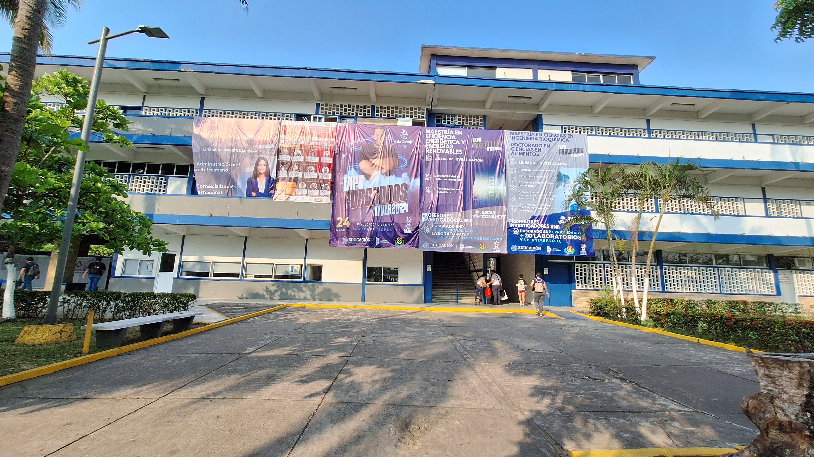
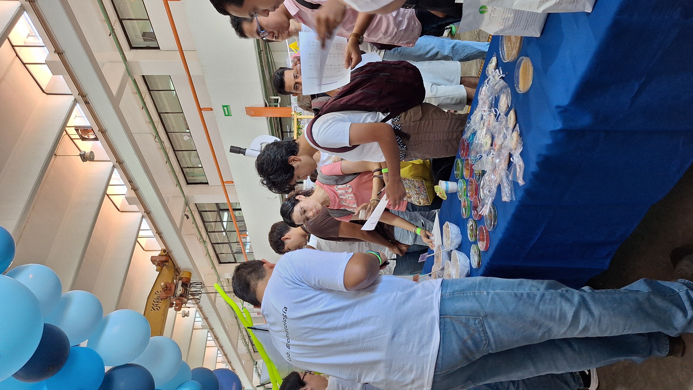
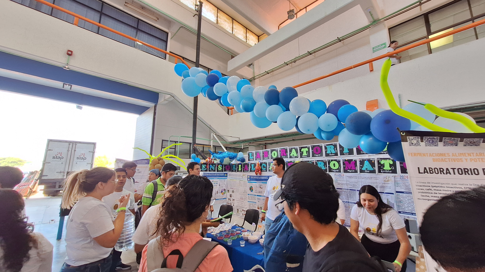
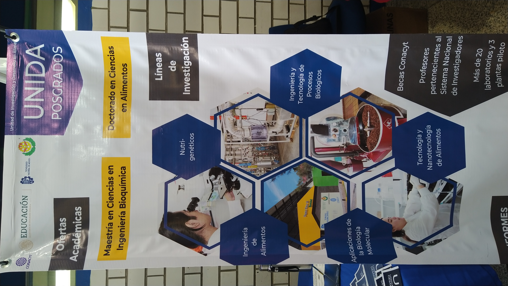
Descripción: Estudio, producción y caracterización cinética de enzimas glicosilhidrolasas (fructosiltransferasas, glucosiltransferasas, celulasas y amilasas) para la obtención de biomoléculas de alto valor industrial. Se enfoca en el diseño de biocatalizadores eficientes orientados a la optimización de procesos en la industria alimentaria y farmacéutica.
Objetivo: Aislar, caracterizar y aplicar sistemas enzimáticos libres o inmovilizados que permitan mejorar los rendimientos de síntesis y la estabilidad térmica en reactores a escala de laboratorio y piloto.
Palabras clave: Enzimología, Glicosilhidrolasas, Cinética Enzimática, Biocatálisis Industrial.
Descripción: Desarrollo de herramientas biotecnológicas para la producción de prebióticos emergentes, postbióticos y almidón resistente mediante biocatálisis dirigida, utilizando subproductos agroindustriales locales como materia prima de bajo costo, mitigando el impacto ambiental.
Objetivo: Revalorizar residuos lignocelulósicos y agroindustriales de la región del Golfo de México para integrarlos en cadenas de valor mediante procesos biotecnológicos limpios y escalables.
Palabras clave: Economía Circular, Prebióticos, Revalorización de Residuos, Bagazo de Caña.
Descripción: Exploración del potencial genético, metabólico y biotecnológico de consorcios fúngicos y bacterianos nativos en suelos agrícolas complejos para la búsqueda, identificación y aislamiento de nuevas hidrolasas con alta estabilidad industrial mediante aproximaciones moleculares y metagenómicas.
Objetivo: Identificar variantes genéticas únicas en microorganismos extremófilos o adaptados de zonas agrícolas que ofrezcan ventajas operativas (pH, temperatura, inhibidores) sobre las enzimas comerciales actuales.
Palabras clave: Metagenómica Funcional, Consorcios Fúngicos, Biología Molecular, Microorganismos Nativos.
- 2026: Figueroa-Hernandez CY, Delfin-Ruiz ME, del Moral Ventura ST. "¡Mesero! Un menú de prebióticos para mis bacterias". Revista de divulgación Ingenius. Universidad Cristóbal Colón. Vol 1, número 4, pg. 40-46. [Ver enlace]
- 2023: Hernández Heredia SC, del Moral Ventura ST. "Producción de enzimas recombinantes, un vistazo a lo increíble". Revista de divulgación Ingenius. Universidad Cristóbal Colón. Vol 1, número 2, pg, 22-25. [Ver enlace]
- 2023: del Moral-Ventura ST, Carvajal-Zarrabal O, Navarro-Moreno LG, Carrillo-Ahumada J, Aguilar-Uscanga MG, Nolasco-Hipolito C. "Desarrollo de tecnología para producir bioetanol lignocelulósico en México, retos y oportunidades". Revista Internacional de Investigación e Innovación Tecnológica. Año 11, no. 62. ISSN: 2007-9753 Latindex Folio: 23614. [Ver enlace]
- 2021: Ávila Fernández Ángela, del Moral Sandra y Ortiz-Soto Maria Elena. "¿Héroes o villanos? Los azúcares en la salud y la enfermedad". Revista Digital Universitaria (rdu), 22(2). ISSN: 1607-6079. [Ver DOI]
- Patente en Trámite (2018): "Proceso de producción de celulasas obtenidas de hongos autóctonos". Número de registro de solicitud: MX/E/2018/096207. Fecha de registro: 13 de diciembre de 2018.
- Capítulo de Libro (2023): "Enzimas recombinantes para la producción de bioetanol". En: Latinoamérica ante el desafío de las energías renovables. Ave Editorial, pp. 106-125.
- Capítulo de Libro (2019): "Soportes avanzados para la inmovilización de enzimas". En: Tendencias Actuales en Biocatálisis Aplicada. Editorial de Ciencias Básicas, pp. 210-233.
Formación de recursos humanos
Doctorado · Maestría · Licenciatura · Residencias profesionales
Autor Investigador
¡Hola! 👋 Actualmente hay oportunidades abiertas para:
- Tesis de Licenciatura y Posgrado
- Residencias Profesionales
- Colaboraciones en biocatálisis, metagenómica y enzimas recombinantes.
Si te interesa integrarte al equipo, manda un mensaje directamente al correo:
Enviar Correo